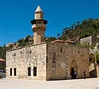

Welcome to Wikipedia,
the free encyclopedia that anyone can edit. 6,131,798 articles in English
The decorated ceilings of the Natural History Museum in South Kensington, London, were designed by the museum's architect Alfred Waterhouse, and were unveiled at the building's opening in 1881. The ceiling of the large Central Hall (pictured) consists of 162 panels, 108 of which depict plants considered significant to the history of the museum, to the British Empire or to the museum's visitors. The remaining 54 are highly stylised decorative botanical paintings. The ceiling of the smaller North Hall consists of 36 panels, 18 of which depict plants growing in the British Isles. Both ceilings make extensive use of gilding for visual effect. Built of lath and plaster to save costs, the ceilings are unusually fragile and require extensive maintenance and restoration. Since 2016 the skeleton of a blue whale has been suspended from the ceiling of the Central Hall. (Full article...) Recently featured: Eris (dwarf planet) Elasmosaurus Osbert Lancaster Archive • By email • More featured articles
... that the Druze emir Fakhr al-Din built a mosque (pictured) in Mount Lebanon despite the non-use of mosques by the Druze? ... that none of the 17 anchor projects put forward for recovery from the 2011 Christchurch earthquake in New Zealand have been delivered on time? ... that Stuart Bergsma, a medical missionary in Ethiopia and India, connected speaking in tongues with emotional stress? ... that the 1994 video game Kajko i Kokosz, the first based on the Polish comic book series of the same name, was not playtested, and the initial release had to be recalled and replaced? ... that Sarah Chapone compares the legal situation of married women in 18th-century England to slavery in her legal treatise? ... that the J. N. Petit Library in Mumbai is considered to be one of the finest examples of Neo-Gothic architecture in the city? ... that the transmitter used to start Nashville radio station WSIX was purchased in exchange for five barrels of oil? ... that during the women's marathon at the 1983 World Championships in Athletics, one runner fell out of medal contention when she stopped for a toilet break? Archive • Start a new article • Nominate an article
- Disease
- •
- Virus
- •
- Testing
- •
- Timeline
- •
- By Location
- •
- Impact
- •
- Notable Deaths
- •
- Portal
- Former Malaysian prime minister Najib Razak (pictured) is found guilty on all seven charges in the first trial related to the 1MDB scandal.
- A series of attacks over disputed farmland in Darfur, Sudan, leaves more than eighty people dead and several villages destroyed.
- A security breach in the administration system of Twitter results in many prominent accounts promoting a bitcoin scam.
Recent deaths: Hermain Cain • Mike Gillespie • Perrance Shiri • John McNamara • Reese Schonfeld • Frank Howard

Najib Razak
July 30: Day of Arafah (Islam, 2020); Tisha B'Av (Judaism, 2020); International Day of Friendship
- 1676 – Rebelling colonists led by Nathaniel Bacon issued the Declaration of the People against the rule of Governor William Berkeley in Virginia.
- 1865 – Off the coast of Crescent City, California, the steamship Brother Jonathan (depicted) struck an uncharted rock and sank, killing 225 people; its cargo of gold coins was not retrieved until 1996.
- 1930 – Uruguay defeated Argentina at Estadio Centenario in Montevideo to win the inaugural FIFA World Cup.
- 1950 – At the height of the political crisis known as the Royal Question, four workers were shot dead by the Belgian Gendarmerie at a strike in Grâce-Berleur.
- 2006 – Lebanon War: The Israeli Air Force attacked a three-story building near the Southern Lebanese village of Qana, killing at least 28 civilians, including 16 children.
Jacob Baradaeus (d. 578) • Walter Schuck (b. 1920) • Ian Gow (d. 1990)
More anniversaries: July 29 • July 30 • July 31
Archive By emailList of historical anniversaries
Brother Jonathan